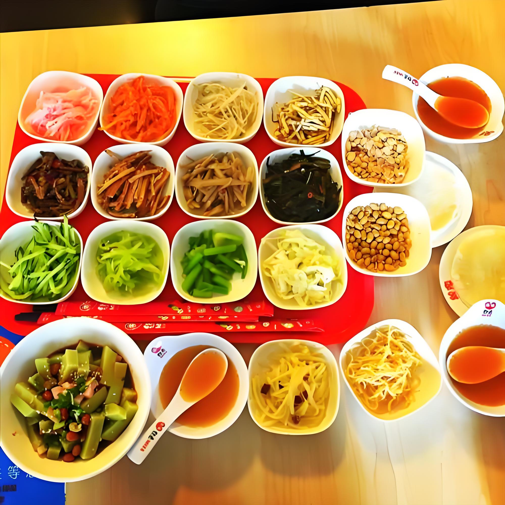
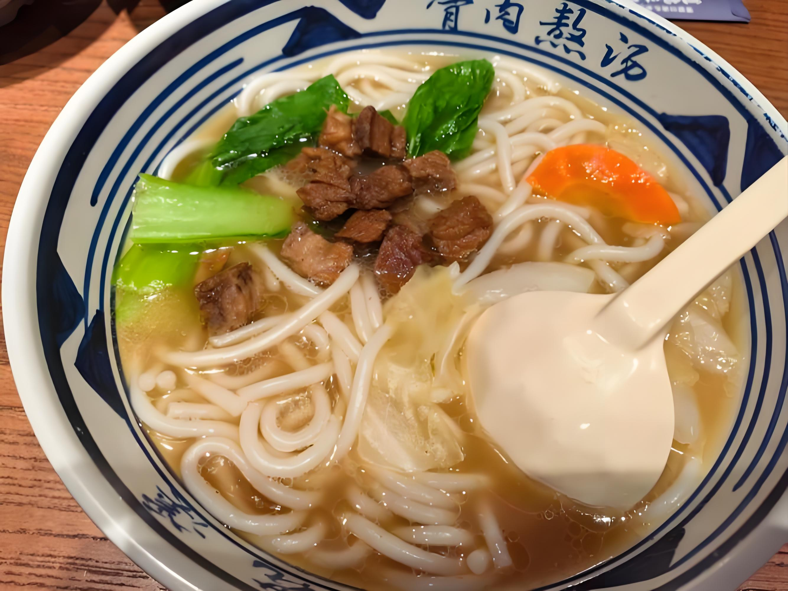

爽爽贵阳，避暑天堂
自然景观
AAAAA级景区
黔灵山公园
城市喀斯特森林公园，野生猕猴群 + 弘福寺禅意，春季可赏樱
野生猕猴
弘福寺
樱花季
建议游览时间：3-4小时
云岩区枣山路187号
国家级公园
花溪公园
"高原明珠"，花溪河蜿蜒 + 油菜花田 / 枫叶季（春 / 秋）
花溪河
油菜花
枫叶季
建议游览时间：2-3小时
花溪区花溪大道南段
人文风景
历史文化名镇
青岩古镇
明清军事屯堡，石砌街巷 + 状元故居 + 城墙炮台，夜游灯笼氛围感拉满
屯堡建筑
状元故居
夜游灯笼
建议游览时间：半天
花溪区青岩镇
明代地标
甲秀楼
明代贵阳地标，毗邻翠微园，夜游灯光秀衬着南明河超出片
明代建筑
翠微园
灯光秀
建议游览时间：1-2小时
南明区南明河畔
美食推荐

丝娃娃
薄饼裹脆哨 / 折耳根，蘸酸汤蘸水
价格：15-25元/份

花溪牛肉粉
清汤炖黄牛肉，配花溪糊辣椒面
价格：12-18元/碗
酸汤鱼
番茄 / 木姜子酸汤煮江团，酸辣鲜香
价格：68-128元/份
交通出行
贵阳北站为起点
到黔灵山公园
公交 264 路（6:30-22:00，约 20 分钟）
或 地铁 1 号线（贵阳北站→北京路站）步行 10 分钟
到青岩古镇
公交 203 路（6:00-21:00，约 1 小时）
或 景区直通车（8:00-16:00，约 40 分钟）
到甲秀楼
地铁 1 号线转 2 号线（贵阳北站→喷水池→阳明祠站）步行 8 分钟
或 公交 48 路（约 30 分钟）